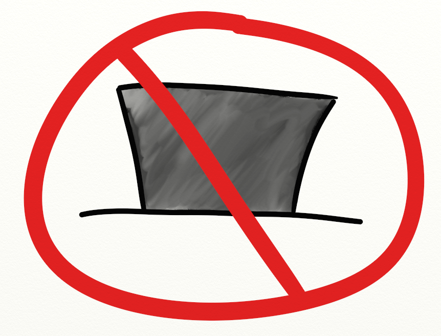

plentymarkets Workflow Refactoring
Ist-Zustand:

Was kann verbessert werden?
Weniger "Trichter"
... es sind Flaschenhälse, die uns bremsen
Weniger "Hüte"
... reduziert den Kommunikations-Overhead

Pro
Was ist besser?
- Alles aus einer Hand: Modell-Planung & UI-Entwurf
- Weniger Overhead bei Planung
- Weniger Overhead bei Kommunikation während des Projekts
- Schnellere Entscheidungen
- Weniger Fehler und Missverständnisse zwischen UI und Model
Contra
Was würde uns herausfordern?
- Einheitlichkeit der UI muss erhalten bleiben
- → Ich liefere einen 'Styleguide'
- → Ich leiste gerne Hilfe
- Wichtig: Wir brauchen keine finalen Design-Entwürfe, sondern nur "Mockups"!
- Mehraufwand für UI-Entwürfe muss eingerechnet werden
- → Nicht jedes Projekt benötigt wirklich einen UI-Entwurf
- → Arbeit mit Balsamiq Mockups ist effizient und schnell erlernt (Drag & Drop)
- → Ich stelle euch eine zusätzliche Widget-Library bereit!